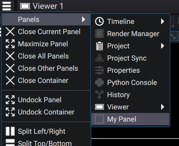

Creating custom Panels
New Panel class must inherit CustomPanel and implement the following virtual functions:
CustomPanel.createMainItem() : Must be implemented to return a QQuickItem object.
A typical example would be:
# Create a QQmlComponent from the QML file
comp = QQmlComponent(Autograph.app.getQmlEngine(), Autograph.app.getPythonScriptsDirPath() + '/MyPanel.qml')
# Create an instance of the compoonent, passing it a QObject as property to interact with our Python properties
return comp.createWithInitialProperties({"panel": self._obj})
In this example, the self._obj is a custom QObject-derived class which contains Qt properties necessary in the Qml code:
# A custom QObject to hold properties that we need to interact with QML
# Unfortunately, you cannot (yet) inherit both from QObject and Autograph.CustomPanel
# so we encapsulate every Property/Signal in a separate class add a member to the custom panel class
# See https://qmlbook.github.io/ch20-python/python.html for basics of how to use Qt for Python
class MyPanelQObject(QObject):
def __init__(self):
super().__init__()
self._value=5.4
def getValue(self):
return self._value
def setValue(self, v):
if (self._value != v):
self._value = v
self.valueChanged.emit(self._value)
valueChanged = Signal(float)
value = Property(float, getValue, setValue, notify=valueChanged)
Then in QML we can just do:
import QtQuick 2.14
import QtQuick.Controls 2.14
Control {
id: root
// The QObject set from Python containing our properties
required property QtObject panel
Text {
text: "Python property value is %1".arg(root.panel.value)
}
}
In QML, you can use any item available in Qt. See the documentation for more information and examples
Register the Panel class
To be available in the panels’s menu, you must first register the class in so Autograph knows about it.
{kind=link}

This can be done with Application.registerPanelClass() whith a factory callable, e.g:
# Factory function for MyPanel
def makeMyPanel():
return MyPanel()
# Register the panel class to Autograph
Autograph.app.registerPanelClass(makeMyPanel, 'com.mycompany.MyPanel', 'My Panel', Autograph.app.getPythonScriptsDirPath() + '/MyPanelIcon.svg', True)
The isSingleton parameter of the Application.registerPanelClass() function is useful if your Panel class should be creatable only once in the Project. Non singletons Panels are quite rare and usually involve the user selecting which panel to use, such as the TimelinePanel or ViewerPanel.
Data serialization
A Panel can save data either in the current user project or in the UI workspace or in custom Settings (which are saved in dedicated JSON files).
The workspace stores some state of the panels such as the way the UI is split. It does not save any project-related informations. For example, the workspace may remember a panel size or that it was maximized. However, for example, the ViewerPanel gain/gamma controls are saved in the project instead as they are specific to a user project.
Serialization from Python is based on 2 functions: a save function that must return a dict and a load function that takes a previously saved dict and must restore its state from it.
To save in the Workspace, re-implement CustomPanel.saveInWorkspace() CustomPanel.loadFromWorkspace().
To save in the user Project, re-implement CustomPanel.saveInProject() CustomPanel.loadFromProject()
To save in a custom Settings class, derive from it and implement Settings.save() and Settings.load()
class MySettings(Autograph.Settings):
def __init__(self):
super().__init__()
self._value = 2.
def save():
return {'MyValue': self._value}
def load(values)
self._value = values['MyValue']
Autograph.app.registerAndLoadSettings(MySettings(), 'My Settings')